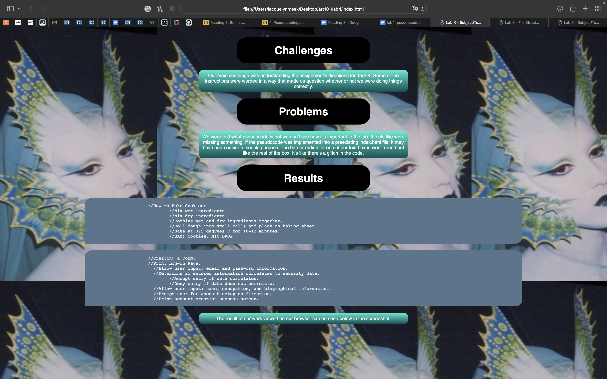

Our main challenge was understanding the assignment's directions for Task 4. Some of the instructions were worded in a way that made us question whether or not we were doing things correctly.
We were told what pseudocode is but we don't see how it's important to the lab. It feels like were missing something. If the pseudocode was implemented into a preexisting index.html file, it may have been easier to see its purpose. The border radius for one of our text boxes won't round out like the rest of the box. It's like there's a glitch in the code.
//How to Bake Cookies:
//Mix wet ingredients.
//Mix dry ingredients.
//Combine wet and dry ingredients together.
//Roll dough into small balls and place on baking sheet.
//Bake at 375 degrees F for 10-12 minutes!
//BAM! Cookies. MIC DROP.
//Creating a Form:
//Print Log-in Page.
//Allow user input; email and password information.
//Determine if entered information correlates to security data.
//Accept entry if data correlates.
//Deny entry if data does not correlate.
//Allow user input; name, occupation, and biographical information.
//Prompt user for account setup confirmation.
//Print account creation success screen.
The result of our work viewed on our browser can be seen below in the screenshot.
